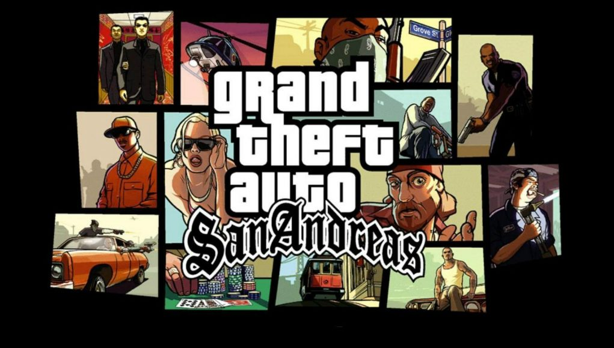

Top 3 Personal Favorite Games
-
- Slay The Spire
-

Slay The Spire is a deck-building roguelike made by Mega Crit. This takes my number one spot as I have been playing this since it came out in 2017. This is running in the background while I do work or other tasks.
According to Slay The Spire Wiki, Slay The Spire is a game in which you climb The Spire, ascending its floors through three acts (four acts if you collect the keys), encountering many enemies, bosses, and events along the way. The paths through each act all lead to a final floor where a challenging boss encounter awaits. The content of each floor and the available paths through each act are procedurally-generated, so each run will be a different experience.
Slay The Spire is a game primarily about survival, collecting cards, and building a powerful deck to wipe out your foes.
-
- Grand Theft Auto: San Andreas
-

GTA San Andreas was the second open world game I played, first one being GTA Vice City. There were community made mods and I also created some skins for the first time. San Andreas was the first game I ever played online in using a 3rd party client called SAMP.
According to GTA Wiki, GTA San Andreas was "by far the largest and most complex playing field of any 3D Universe game, San Andreas consists of three fully-realized cities: Los Santos, San Fierro and Las Venturas, and includes vast expanses of countryside, forests, a desert, and even a mountain and many hills. The game is centered around the return of Carl Johnson (also known as CJ) to his gang (the Grove Street Families), and their subsequent return to power."
-
- Tom Clancy's Rainbow Six Siege
-

Rainbow Six Siege is a multiplayer game in which there are two teams fighting to win in different game modes. I have played this on and off with friends since the game came out. It is always fun to strategize with friends.
According to RainbowSix Wiki, "Matches are conducted in a 5v5 manner, with each player only receiving one life per round. As such, it is important to communicate with teammates and plan assaults when attacking or defense when defending. Attackers start each round with 45 seconds to send a Drone to survey and detect items in the environment, allowing players to find enemies and targets and mark them. Defenders, on the other hand, have the ability to fortify their location and prepare for the inevitable assault by the Attackers. This is done through setting up Reinforced Walls and Barricade around the area as well as deploying unique abilities to help defend the area such as with Bandit's Shock Wires or Mute's Signal Disruptors."